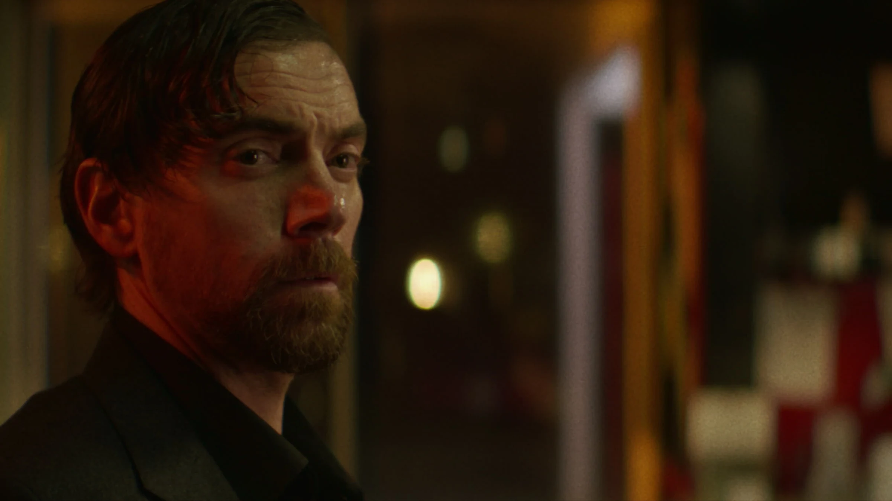
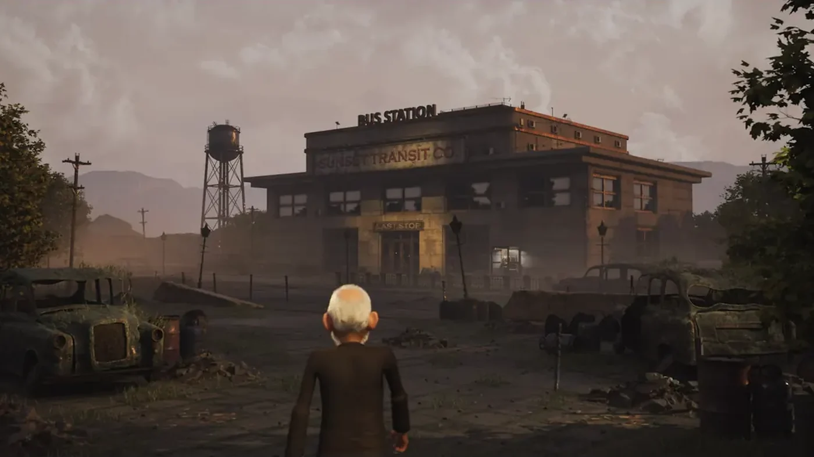

Family Tradition
In this family, inheritance doesn’t come with money—it comes with blood.
Stills from the finished film·dir. Bailey Donovan·DP Kristian Dane Lawing
There’s things in this town much worse than murder.
— Gray Harris
Overview
On a storm-soaked night in a dying Southern town, three estranged siblings reunite at a diner after their father’s funeral, hoping to put the past behind them. Instead, old wounds split open as buried truths about their family begin to surface—rumors of murder, secrets about their mother, and the dark legacy tied to their land. As tensions rise, one brother reveals he may be more like their father than anyone wants to admit. What starts as a conversation turns into a reckoning, as the line between victim and monster blurs beyond recognition. When the past finally walks through the door, it becomes clear—this family’s story was never over.
Themes
- Identity
- Family Legacy
- Inherited Violence
- Truth vs Denial
Tone
Contained tension. Intimate. Volatile. Darkly human.
Stills
Tap a frame to enlarge
Tap to zoom · turn your phone for a wider view Click the frame for full resolution
If this kind of story fits what you’re building—let’s talk.
More Stories

The Last Stop
He thought he was ready to die—until life gave him one more reason to stay.
Sunsets In Memphis
A lone gunslinger in space is forced to trust the one man too useless to survive—until he saves everything.
Wilder
She lied her way into his story—now it’s the only thing that can save her life.